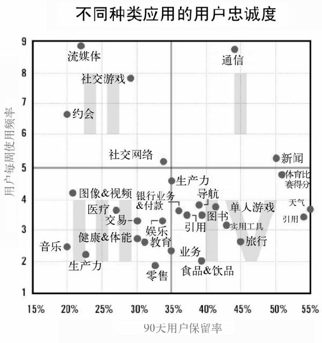

免费移动应用：底线在哪里
移动应用业务受困于人气上的“长尾效应”：极少数应用人气很高，多数应用在缺乏关注的困境里挣扎。
你要有被应用商店心血来潮的政策、促销和营销活动所左右的心理准备。应用商店的战争可能是令人沮丧的，但是聪明的移动开发者会充分了解他们的竞争对手来找到有效的策略，效法他们的成功并避免他们的错误。
移动应用下载大小
如果你希望任何人在任何地点都能轻松下载你的应用，那么它在门户上的大小必须在50mb以下。
移动应用客户获取成本
真正应该关心的指标是逐利的安装者带来多少正常用户，以及这些用户中有多少会成为重度用户和付费用户。
为每个付费安装支付0.5美元，为每个正常的自然用户花费2..5美元，但要确保总体的获取成本低于每用户0.75美元。
移动广告比你预先设想的要更加复杂和昂贵，你需要仔细地跟踪客户获取成本。
同样要注意客户回报弥补获取成本的速度，以及客户的终身价值。尝试不同的渠道并跟踪用户的行为，使用病毒式传播作为降低用户获取成本的手段。
应用启动率
应用启动率和流失率有关。
移动应用付费用户百分比
对于免费增值模式而言，从免费到付费的转化率要达到2%以上。对于一个有内购的应用而言，要假设大约有1.5%的用户会付款购买。
每日活跃用户的平均营收
每日活跃用户的平均营收应以0.05美元为底线目标。
每位付费用户平均营收
| 用户分类 | 占比 | 营销方式 |
|---|---|---|
| 鲸鱼用户 | 10% | 升级产品 |
| 海豚用户 | 40% | 销售内容 |
| 小鱼用户 | 50% | 销售外观 |
移动客户终身价值

- 频繁使用、能保留忠诚用户的应用可以成为广告、周期收费或精心设计的应用内内容媒介
- 频繁使用、但会在一段时间后失去用户的应用可能会满足某个需求（比如买一栋房子或完成游戏），之后就不再受关注。这时，每次交易的手续费，以及当客户需求出现时能够联系客户的能力比长期的客户参与更加重要。
- 不常使用、低客户忠诚度的应用需要在早期“抓住钞票”，所以它们更适合作为付费应用或一次性收费应用。
- 不常使用、高客户忠诚度的应用需要充分利用低频的互动机会来向客户追加销售，鼓励客户邀请其他人使用，并确保应用停留在用户放置实用工具的“多功能腰带”上。